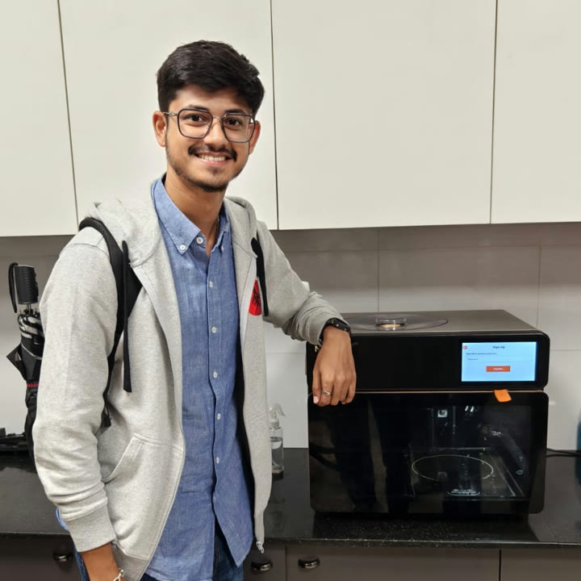
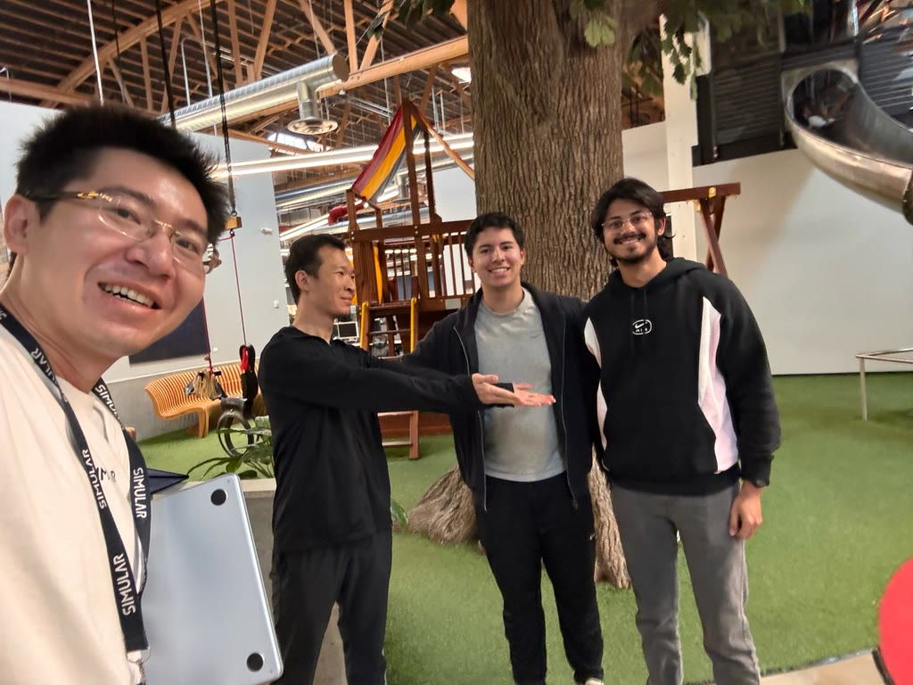
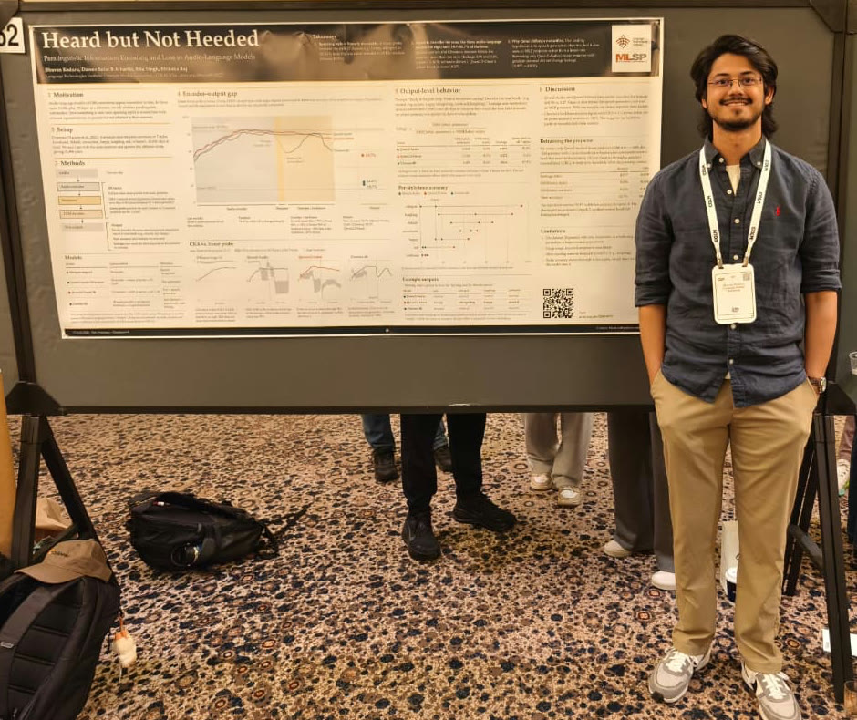

We belong
I studied for twelve years at Prakriya Green Wisdom School, where we learned to look at the Earth the way the Gaia hypothesis does. As one living system of people, animals, insects and plants, where pulling out any one part weakens the whole. Alongside it, we learned Vasudhaiva Kutumbakam, the Sanskrit idea that the world is one family. I’ve grown up learning from driver “uncles” and “annas”, “aayammas”, and filling up my water bottle with tadpoles, much to the dismay of my poor mother. I've also participated in competitions like WIPRO Earthian. As we’ve learnt to build, a new component has entered the system: AI. It seems like this is the one component which has the most weight on the scales which balance the world, and building it requires a lot of care.

Screens between us
Unfortunately, the default tendency of using AI leads to autonomy. Autonomous driving, coding, and everything else. This is slowly (rapidly, actually) pushing people away from each other, and away from themselves too. I want to bet on building for humans. Not to replace us and our thinking, but to enable us and help us bloom. And this is the world I want to live in, and the world I want to build for us. On a slight tangent, I believe that us AI folk are extremely privileged, and it is our duty to build something of use to the broader community. I believe this deeply about myself too, because I have had the opportunity to study at the best school in the world, CMU. My research keeps telling me that bet is right, and it’s what makes me hopeful for a calmer, gentler, and brighter future. Humans are a social species, and relationships woven together form the fabric which holds us together. In fact, part of the reason behind actually writing this blog is a conversation with my mother.
Meeting kind leaders

I hope to choose a job and a company for the mission, not just to make ends meet. I believe in people, which is what led me to work at Nosh Robotics and Simular. Nosh builds robots that cook food for people, and Simular liberates people from their computers.
I was in charge of livestreaming the product launch video for Nosh. I had an eight camera setup with three mics. Everything was riding on me, an intern who had never done this before. And my worst fears came true. A few cameras stopped working, and the mics refused to connect. People on the livestream were trashing the company, and at that moment, I just wanted the earth to suck me in. I was the kid who was sinking an entire company. The day after the ordeal, on a Sunday evening, I got a call from one of the founders, Amit. I ran up to my father, to console me if I got fired. To my surprise, he said he was proud of me, and that we all make mistakes. He was proud that I rose to the occasion and did not give up. He was a man I wanted to build with.
 Play the Nosh launch aftermovie
Play the Nosh launch aftermovie
 Play the reshot Nosh launch demo
Play the reshot Nosh launch demo
More recently, in August, I went on a walk with Ang, the CEO of Simular. I asked him why the company open-sources everything they build. Everything that could be making them money. He looked at me and said that he started the company to solve a problem, but he need not be the one who drives it all the way. Someone else can take the baton and move forward. This is how solutions are built. In community. Together. By contributing to the community, we only inch towards solving the problem, not away.
In fact, this approach of choosing the right people has also taken me away from a few lucrative opportunities. This is what I’ve been learning, inculcating, and trying to spread since I was four years old.

Stories and questions
I believe it is my calling to work on AI safety: to make these models better for us humans, to have them understand us, and to keep us safe. The onus is on the AI community to give the world safe models, not on the people who use them. We have an unfair share of the world’s natural resources and money, and it only seems fair that we also pull our weight. That’s why I’ve worked on AmongUs-X, on computer-use safety at Simular, and on mechanistic interpretability and grokking with Niloofar.
A lot of my research revolves around trying to understand what models actually know. My audio work found that models hear how people say things and then throw it away. You can’t collaborate with someone if you don’t listen and truly understand them. My computer-use work at Simular found that a model which refuses a harmful request in chat might not refuse the same action once equipped with tools as an agent. There has to be a better way to teach safety to models. AmongUs-X studies the multi-person version: agents with private information and their own incentives, each of which has to model what everyone else believes. That’s the problem a model faces when it sits between several people. Humans acting in isolation and humans acting together are totally different. And my work with Niloofar on diversity in agentic traces looks at the impact of mode collapse and lack of diversity: a collaborator that hands everyone the same narrow answer isn’t helping anyone think. Humanity thrives on diverse thinking, and right now millions of people get the same answer from the same model.
Making room
I got the opportunity to present my work at CoLM this year. I really enjoyed the conference, and it felt amazing to be part of such a great community of researchers. I genuinely feel like a different person after it; my perspective towards problem solving and ML has shifted. It felt surreal to be part of this community, where everyone is just trying to uplift the other.

The best research environments I’ve been part of, with Katia Sycara, Bhiksha Raj, Niloofar Mireshghallah, and Eric Wang, have had one thing in common: the people were kind. To me, to themselves, and to the world. Smarts are important, but I also think that a good hearted person can learn almost anything if they want. That’s the kind of place I want to build in, and the kind of AI I want to build. I want to build a future where there’s space for each other to grow, fall, and get back up together. There’s a long way to go, and I want to help get there.